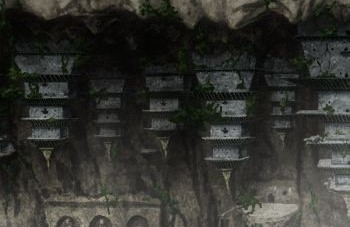
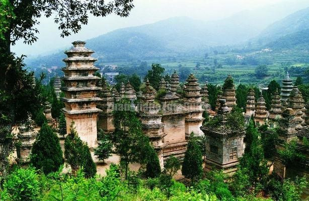
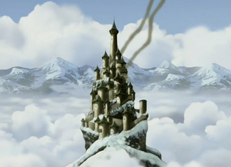
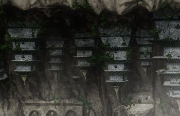
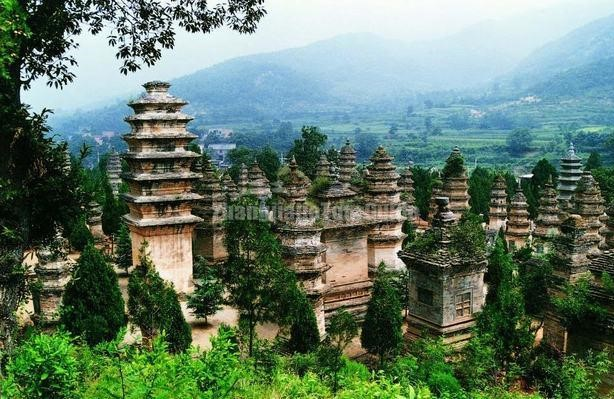
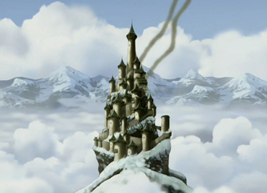
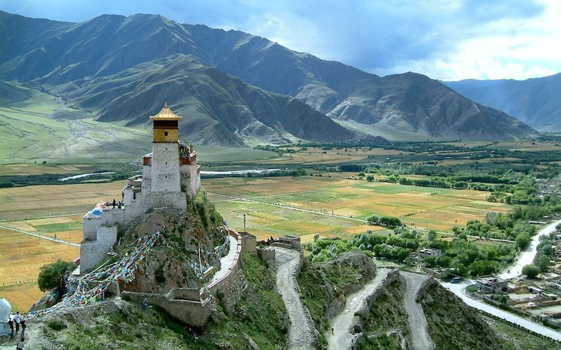
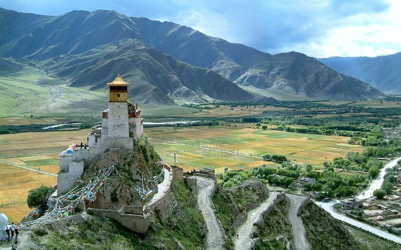
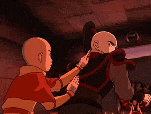
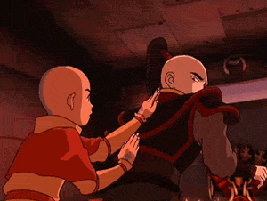

Location & Architecture
Images from Avatar
The Asian Inspiration
Air Nomads are located in elevated, isolated areas, much like how the Tibetan Buddhist monks are isolated among the many mountain ranges in Tibet.
The Eastern, Northern, and Southern Air Temples are based on traditional Buddhist temples. The Western Air Temple (2nd row) was inspired by the Pagoda Forest at Shaolin Temple in China. The pagodas of the Western Air Temple were built upside down into the underside of a cliff.

 






 



 
